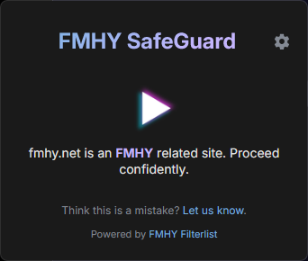
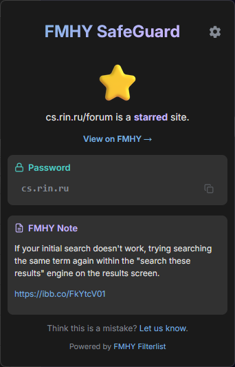

StarredFMHY pick
FMHY knowledge in your toolbar
FMHY, beside you.
SafeGuard checks sites and links against FMHY data while you browse.

SafeTrusted list
UnknownNo match
CautionPossible risk
UnsafeKnown risk
The useful parts of FMHY, attached to the page.
SafeGuard gives each link a status and keeps the supporting details one click away.
Mark safe and unsafe links in search results and ordinary pages.
See why a domain was flagged and open the evidence when it is available.
Bring wiki notes, passwords, and invite codes into the extension popup.
Change warning behavior, updates, colors, language, and theme.

Context travels with the site.
No separate lookup required.
Pick your browser.
Install from the official store, then let SafeGuard update its FMHY data automatically.
It works in the background.
Browse normally. Open the popup only when you want more context.
Install
Add SafeGuard from your browser store.
Browse
The toolbar icon follows the current site's status.
Inspect
Open the popup for notes, reasons, passwords, or invite codes.
Adjust
Set the warning and highlighting behavior you prefer.
See a bad classification?
Report it, check the source, or help improve the project.